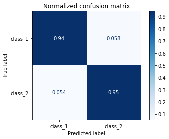
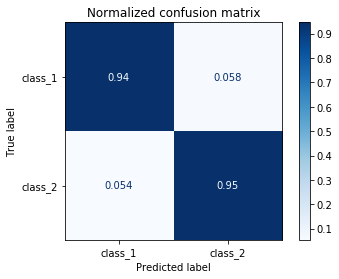

Métricas de evaluación#
Se recomienda revisar el siguiente enlace: https://scikit-learn.org/stable/modules/classes.html#module-sklearn.metrics
!wget --no-cache -O init.py -q https://raw.githubusercontent.com/jdariasl/ML_2020/master/init.py
import init; init.init(force_download=False);
Julián D. Arias Londoño#
Profesor Asociado
Departamento de Ingeniería de Sistemas
Universidad de Antioquia, Medellín, Colombia
julian.ariasl@udea.edu.co
%matplotlib inline
import numpy as np
import matplotlib.pyplot as plt
Diferencia entre función de costo y métrica de evaluación#
Como vimos en las primeras sesiones de clase, a la hora de definir una tarea de ML es necesario establecer la plantilla de modelo que se va a usar, junto con eel criterio de entrenmiento o función de costo y el algoritmo de entrenamiento. La función de costo es una medida que nos permite realizar la optimización del modelo y que debe cumplir ciertas restricciones, como el hecho de ser continua, pero su valor no necesariamente tiene una interpretación directa de cara al problema que se está resolviendo. Por esa razón es necesario utilizar médidas de evaluación, que permitan establecer el desempeño del modelo de ML.
Ejemplo: Compare el error de clasificación con la cross-entropía
Medidas de desempeño para problemas de Clasificación#
Error de clasificación:
donde \([\![ \cdot ]\!]\) es una función indicador que es igual a 1 cuando la condición se cumple y 0 de lo contrario.
En un problema de clasificación los errores no son todos iguales#
from IPython.display import Image
Image("./Images/confusion_matix_example.png", width = 600)

from sklearn.discriminant_analysis import QuadraticDiscriminantAnalysis
N = 500
Cov = np.identity(2) * 1.1
Cov2 = np.array([[1.1,0.5],[0.5,1.1]])
Mean = [1.1,2.1]
Mean2 = [4.1,4.1]
x, y = np.random.multivariate_normal(Mean, Cov, N).T
x2, y2 = np.random.multivariate_normal(Mean2, Cov2, N).T
X = np.r_[np.c_[x,y],np.c_[x2,y2]]
Y = np.r_[np.ones((N,1)),np.zeros((N,1))]
clf = QuadraticDiscriminantAnalysis()
clf.fit(X,Y.flatten())
plt.scatter(X[:,0],X[:,1],c=Y.flatten(), cmap='Set2',alpha=0.5)
h = .02 # step size in the mesh
# create a mesh to plot in
x_min, x_max = X[:, 0].min() - 1, X[:, 0].max() + 1
y_min, y_max = X[:, 1].min() - 1, X[:, 1].max() + 1
xx, yy = np.meshgrid(np.arange(x_min, x_max, h),np.arange(y_min, y_max, h))
# Plot the decision boundary. For that, we will assign a color to each
# point in the mesh [x_min, m_max]x[y_min, y_max].
Z = clf.predict(np.c_[xx.ravel(), yy.ravel()])
# Put the result into a color plot
Z = Z.reshape(xx.shape)
plt.contour(xx, yy, Z, cmap=plt.cm.Blues)
plt.xlabel('$x_1$')
plt.ylabel('$x_2$')
plt.grid()
x, y = np.random.multivariate_normal(Mean, Cov, N).T
x2, y2 = np.random.multivariate_normal(Mean2, Cov2, N).T
X = np.r_[np.c_[x,y],np.c_[x2,y2]]
Y = np.r_[np.ones((N,1)),np.zeros((N,1))]
Y = Y.flatten()
y_pred = clf.predict(X)
y_pred2 = clf.predict_log_proba(X)
score = y_pred2[:,0]-y_pred2[:,1]
#TruePositive
indi_TP = np.logical_and((y_pred == Y),(Y==1))
#TrueNegative
indi_TN = np.logical_and((y_pred == Y),(Y==0))
#FalsePositive
indi_FP = np.logical_and((y_pred != Y),(Y==1))
#FalseNegative
indi_FN = np.logical_and((y_pred != Y),(Y==0))
TP = score[indi_TP]
TN = score[indi_TN]
FP = score[indi_FP]
FN = score[indi_FN]
_ = plt.hist(TP, bins=30,rwidth=0.9,label='TN',alpha=0.5)
_ = plt.hist(TN, bins=30,rwidth=0.9,label='TP',alpha=0.5)
_ = plt.hist(FP, bins=30,rwidth=0.9,label='FP',alpha=0.5)
_ = plt.hist(FN, bins=30,rwidth=0.9,label='FN',alpha=0.5)
plt.xlabel('log score')
plt.legend()
plt.show()

Representación gráfica de la matrix de confusión#
from sklearn.metrics import plot_confusion_matrix
titles_options = [("Confusion matrix, without normalization", None),
("Normalized confusion matrix", 'true')]
for title, normalize in titles_options:
disp = plot_confusion_matrix(clf, X, Y,
display_labels=['class_1','class_2'],
cmap=plt.cm.Blues,
normalize=normalize)
disp.ax_.set_title(title)
print(title)
print(disp.confusion_matrix)
plt.show()
Confusion matrix, without normalization
[[471 29]
[ 27 473]]
Normalized confusion matrix
[[0.942 0.058]
[0.054 0.946]]
 

En un problema de múltiples clases:
{kind=link}
Medidas derivadas de la Matriz de Confusión:#
Sensibilidad (Recall) = True Positive Rate (TPR) = $\(\frac{TP}{TP+FN}\)$
Precisión = Positive Predictive Value (PPV)$\(\frac{TP}{TP+FP}\)$
Especificidad (sólo en problemas biclase) = $\(\frac{TN}{TN+FP}\)$
False Positve Rate (FPR) = $\(1 - Especificidad\)$
Exactitud (Accuracy) = $\(\frac{TP + TN}{TP+TN+FP+FN}\)$
- \[F_\beta = (1+\beta^2) \frac{Precision \cdot Recall}{\beta^2 Precision + Recall}\]
Las más usada es para \(\beta = 1\) que le da igual importancia a la Precisión y a la Sensibilidad.
from sklearn.metrics import accuracy_score, f1_score, precision_score, recall_score
print('Accuracy = '+str(accuracy_score(Y,y_pred)))
print('Precision = '+str(precision_score(Y,y_pred)))
print('Recall = '+str(recall_score(Y,y_pred)))
print('F_1 = '+str(f1_score(Y,y_pred)))
Accuracy = 0.944
Precision = 0.93359375
Recall = 0.956
F_1 = 0.9446640316205533
Problemas desbalanceados#
El desbalanceo se presenta cuando para el entrenamiento de un modelo de ML en un problema de clasificación, una de las clases tiene siginificativamente más muestras que las otras.
N = 500
Cov = np.identity(2) * 1.1
Cov2 = np.array([[1.1,0.5],[0.5,1.1]])
Mean = [1.1,2.1]
Mean2 = [4.1,4.1]
x, y = np.random.multivariate_normal(Mean, Cov, int(N/100)).T
x2, y2 = np.random.multivariate_normal(Mean2, Cov2, N).T
X = np.r_[np.c_[x,y],np.c_[x2,y2]]
Y = np.r_[np.ones((int(N/100),1)),np.zeros((N,1))]
clf = QuadraticDiscriminantAnalysis()
clf.fit(X,Y.flatten())
plt.scatter(X[:,0],X[:,1],c=Y.flatten(), cmap='Set2',alpha=0.5)
h = .02 # step size in the mesh
# create a mesh to plot in
x_min, x_max = X[:, 0].min() - 1, X[:, 0].max() + 1
y_min, y_max = X[:, 1].min() - 1, X[:, 1].max() + 1
xx, yy = np.meshgrid(np.arange(x_min, x_max, h),np.arange(y_min, y_max, h))
# Plot the decision boundary. For that, we will assign a color to each
# point in the mesh [x_min, m_max]x[y_min, y_max].
Z = clf.predict(np.c_[xx.ravel(), yy.ravel()])
# Put the result into a color plot
Z = Z.reshape(xx.shape)
plt.contour(xx, yy, Z, cmap=plt.cm.Blues)
plt.xlabel('$x_1$')
plt.ylabel('$x_2$')
plt.grid()
Validemos sobre un nuevo conjunto de datos:
x, y = np.random.multivariate_normal(Mean, Cov, int(N/100)).T
x2, y2 = np.random.multivariate_normal(Mean2, Cov2, N).T
X = np.r_[np.c_[x,y],np.c_[x2,y2]]
Y = np.r_[np.ones((int(N/100),1)),np.zeros((N,1))]
Y = Y.flatten()
y_pred = clf.predict(X)
print('Accuracy = '+str(accuracy_score(Y,y_pred)))
print('Precision = '+str(precision_score(Y,y_pred)))
Accuracy = 0.996039603960396
Precision = 1.0
Parece que todo fue fantástico!
Pero….
print('Recall = '+str(recall_score(Y,y_pred)))
print('F_1 = '+str(f1_score(Y,y_pred)))
Recall = 0.6
F_1 = 0.7499999999999999
Para problemas desbalanceados se prefiere usar como medida global de desempeño del sistema alguna de las siguientes:
Matthews correlation coefficient (MCC) = $\(\frac{TP \cdot TN - FP \cdot FN}{\sqrt{(TP + FP)(TP+FN)(TN+FP)(TN+FN)}}\)$
Balanced Accuracy (BACC) = $\(\frac{TP}{2(TP + FN)} + \frac{TN}{2(TN + FP)}\)$ En general se estima como el promedio del Recall por clase.
G_mean = $\(\sqrt{Sensibilidad \cdot Especificidad}\)$
En general para un problema con q clases, se estima como la raiz q de la productoria del Recall para todas las clases.
from sklearn.metrics import matthews_corrcoef, balanced_accuracy_score
print('MCC = '+str(matthews_corrcoef(Y,y_pred)))
print('BACC = '+str(balanced_accuracy_score(Y,y_pred)))
MCC = 0.7730521080451098
BACC = 0.8
Para compensar el problema del desbalance también se pueden usar:#
Técnicas de submuestreo inteligente : Eliminar datos atípicos y muestras redundantes de la clase mayoritaria
Técnicas de sobremuestreo inteligente: Generar datos artificiales para usar en el entrenamiento que sigan la misma distribución de los datos reales. Consultar: Synthetic Minority Oversampling Technique (SMOTE)
Técnicas de muestreo apropiadas durante la validación (lo veremos en la siguiente clase)
Pesos diferentes para el error durante el entrenamiento: Su implementación depende de cada modelo en particular.
Revisar la librería imbalanced-learn la cual contiene varios métodos implementados para sub y sobre muestreo, incluyendo SMOTE.
ROC Curve#
La curva ROC (Receiver Operator Characteristic) se utiliza como una medida de desempeño esperado de un sistema de clasificación. La grafica muestra el desempeño en términos de Sensibilidad vs 1 - Especificidad, para diferentes umbrales de decisión. El área bajo la curva ROC (AUC) se usa como medida de desempeño en varias aplicaciones.
Image("./Images/roc.jpg", width = 300)
{kind=link}
Grafiquemos la curva ROC del modelo entrenado antes#
from sklearn.metrics import roc_curve, auc
N = 1000
x, y = np.random.multivariate_normal(Mean, Cov, N).T
x2, y2 = np.random.multivariate_normal(Mean2, Cov2, N).T
X = np.r_[np.c_[x,y],np.c_[x2,y2]]
Y = np.r_[np.ones((N,1)),np.zeros((N,1))]
clf = QuadraticDiscriminantAnalysis()
clf.fit(X,Y.flatten())
y_pred2 = clf.predict_log_proba(X)
score = y_pred2[:,0]-y_pred2[:,1]
tpr,fpr,_ = roc_curve(Y, score)
roc_auc = auc(fpr, tpr)
plt.plot(fpr, tpr, color='darkorange', lw=2, label='ROC curve (area = %0.2f)' % roc_auc)
plt.plot([0, 1], [0, 1], color='navy', lw=2, linestyle='--')
plt.xlim([0.0, 1.0])
plt.ylim([0.0, 1.05])
plt.xlabel('False Positive Rate')
plt.ylabel('True Positive Rate')
plt.title('Receiver operating characteristic example')
plt.legend(loc="lower right")
plt.show()

Veamos el efecto de la distribución de scores en la Curva ROC#
mean = [0,0.5,1,2]
N = 200
Y = np.r_[np.ones((N,1)),np.zeros((N,1))]
plt.figure(figsize=(20,8))
for k,i in enumerate(mean):
x1 = np.random.randn(N) + i
x2 = np.random.randn(N) - i
plt.subplot(2,4,k+1)
_ = plt.hist(x1, bins=30,rwidth=0.9,alpha=0.5, label= 'P_scores')
_ = plt.hist(x2, bins=30,rwidth=0.9,alpha=0.5, label = 'N_scores')
plt.legend()
plt.subplot(2,4,k+5)
score = np.r_[x1,x2]
tpr,fpr,_ = roc_curve(Y, score)
roc_auc = 1 - auc(fpr, tpr)
plt.plot(tpr,fpr, color='darkorange', lw=2, label='ROC curve (area = %0.2f)' % roc_auc)
plt.plot([0, 1], [0, 1], color='navy', lw=2, linestyle='--')
plt.xlim([0.0, 1.0])
plt.ylim([0.0, 1.05])
plt.xlabel('False Positive Rate')
plt.ylabel('True Positive Rate')
plt.title('ROC curve')
plt.legend(loc="lower right")
plt.grid()
plt.show()
Medidas de desempeño para problemas de Regresión:#
Mean Square Error (MSE) $\( E = \frac{1}{N} \sum_{i=1}^{N} \left(y_i - f({\bf{x}}_i) \right)^2 \)$
Mean Absolute Error (MAE) $\( E = \frac{1}{N} \sum_{i=1}^{N} \left|y_i - f({\bf{x}}_i) \right| \)$
Median Absolute Error (MedAE) $\( E = \text{median}\left( |y_1 - f({\bf{x}}_1)|, \cdots, |y_N - f({\bf{x}}_N)| \right) \)$
Es más rebusta frente a datos atípicos que MAE.
Mean Absolute Percentage Error (MAPE) $\( E = \frac{1}{N} \sum_{i=1}^{N} \left|\frac{y_i - f({\bf{x}}_i) }{y_i}\right| \)$
Coefficient of determination (\(R^2\)) $\( R^2 = 1 - \frac{\sum_{i=1}^{N} \left(y_i - f({\bf{x}}_i) \right)^2}{\sum_{i=1}^{N} \left(y_i - \bar{y}) \right)^2}\)\( donde \)\bar{y}\( es el promedio de los \)y_i$
from sklearn.metrics import mean_squared_error, median_absolute_error, mean_absolute_error, r2_score
def mean_absolute_percentage_error(y_true, y_pred):
y_true, y_pred = np.array(y_true), np.array(y_pred)
return np.mean(np.abs((y_true - y_pred) / y_true)) * 100
from library.regularization import PolynomialLinearRegression
def f(size):
'''
Returns a sample with 'size' instances without noise.
'''
x = np.linspace(0, 4.5, size)
y = 2 * np.sin(x * 1.5)
return (x,y)
def sample(size):
'''
Returns a sample with 'size' instances.
'''
x = np.linspace(0, 4.5, size)
y = 2 * np.sin(x * 1.5) + np.random.randn(x.size)
return (x,y)
size = 50
f_x,f_y = f(size)
plt.plot(f_x, f_y)
x, y = sample(50)
plt.plot(x, y, 'k.')
model = PolynomialLinearRegression(degree=8)
model.fit(x,y)
p_y = model.predict(x)
plt.plot(f_x, f_y, label="true function")
plt.plot(x, y, 'k.', label="data")
plt.plot(x, p_y, label="polynomial fit")
plt.legend();
plt.grid();

print('MSE = '+str(mean_squared_error(y,p_y)))
print('MAE = '+str(mean_absolute_error(y,p_y)))
print('MedAE = '+str(median_absolute_error(y,p_y)))
print('MAPE = '+str(mean_absolute_percentage_error(y,p_y)))
print('R^2 = '+str(r2_score(y,p_y)))
MSE = 0.6744931048233564
MAE = 0.6546544519965607
MedAE = 0.5769178793910491
MAPE = 92.8003075177867
R^2 = 0.745604070176843
Nota:#
Aunque usemos varias medidas para evaluar diferentes aspectos del desempeño del modelo de ML, es necesario definir una sola medida de desempeño global que sea el objetivo de optimización y será la base para seleccionar el mejor model y los mejores hiperparámetros.
En problemas de múltiples salidas a cada salida se le estiman sus correspondientes medidas de error y luego se puede definir una medida global como la suma o el promedio de las medidas de desempeño para cada salida.